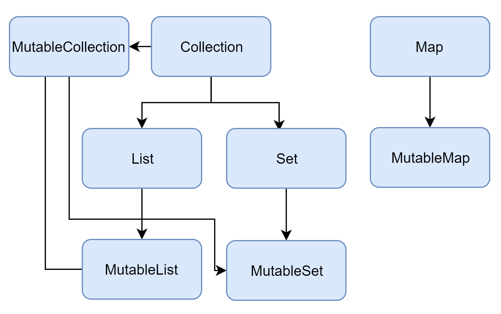

[Kotlin] 컬렉션 프레임워크 - (2) Set
컬렉션 프레임워크
배열(Array)은 생성할 때 크기가 결정된다. 따라서 배열이 생성되면 동적으로 데이터를 추가하거나 삭제할 수 없다. 이를 해결하기 위해 Kotlin API는 컬렉션 프레임워크(Collection Framework)를 지원한다.
컬렉션 프레임워크에서 제공하는 인터페이스 및 클래스와 상속 구조는 다음과 같다.

Set
변경 불가능한 집합을 선언할 때는 setOf()메소드를 사용한다.
1 | // 초기화 이후 추가, 삭제, 변경 불가능 |
변경 가능한 집합을 선언할 때는 mutableSetOf()메소드를 사용한다.
1 | // 초기화 이후 추가, 삭제, 변경 가능 |
집합은 중복을 허락하지 않는다. 동일한 데이터를 여러 개 넣어도 한 개만 유지한다.
1 | // 초기화 이후 추가, 삭제, 변경 가능 |
Collections 클래스
Collections클래스는 Collection인터페이스를 구현한 클래스를 조작할 수 있는 다양한 메소드를 제공한다. 자세한 내용은 이 곳에서 확인할 수 있다.